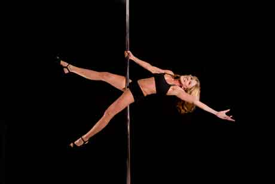
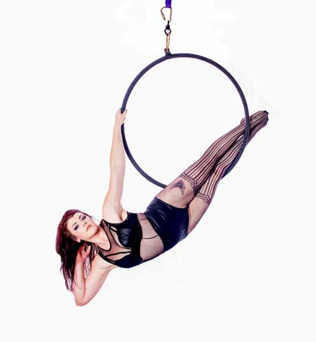
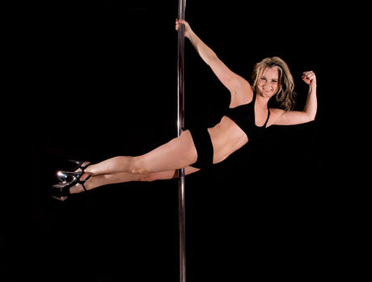

Tobin (Owner)
Tobin is a mother, business owner, and pole athlete. She began poling in 2010, and from the moment she touched that shiny chrome, she knew she was hooked! Tobin took second place in the Level 4 Dramatic category at Northeast Aerial Arts Championships in 2015. She has studied under Jamilla DeVille, Samantha Star, Karol Helms, and more. With two Pole Fitness certifications, Tobin enjoys teaching safe and challenging Pole Fitness classes.

Sierra (Owner)
Sierra, a/k/a LOVE Bunny, started taking pole classes at LOVE in August of 2012. She had never taken dance, gymnastics, cheerleading, or any other sport, but after her very first class, she was hooked. It wasn't so much the dancing or performance part that she was drawn to, but the sisterhood. Having a sanctuary full of beautiful, strong and encouraging women, Sierra found she could feel comfortable with her body and learn how to own it. Shortly after, she found lyra (aerial hoop) and was fascinated by it.
Sierra entered her first pole competition at Supershag 2013 in Boston and again in 2014. She got her Lyra Certification in July of 2014. Sierra competed in the first lyra competition to come to Boston, thanks to Pole Sport Organization, where she placed second, and one of her very own students placed first! To her, that's the best part about teaching: watching her students surpass their own goals as they learn to fly.

Norma
Norma Fay holds a B.S. degree from Ithaca College and is a pole fitness instructor, personal trainer, group fitness instructor, weight management consultant, ski instructor and motorcycle safety instructor. She has extensive experience in the design and delivery of fitness programs. Norma holds a variety of certifications and specialty certificates from X-Pole, The American Council on Exercise, Aerobics & Fitness Association of America, Professional Ski Instructors of America, Motorcycle Safety Foundation and others.
Norma has been a presenter for Exercise Etc., one of the country's largest providers of fitness education programs. Her love of teaching, in many different areas, as helped countless individuals achieve their personal goals.

Christine
Christine, a/k/a Panda, is trained in contemporary and jazz dance. Christine is currently a certified personal trainer with the American Council on Exercise (ACE) and is certified in Fly Gym Aerial Yoga, Aerial Hoop with Atmosphere Fitness, PiYo Live with Team Beachbody, ATL Bootyclap with Vertical Joe's, and Pole Fitness certified with XPert XPole.
Over the last 3 years, Christine has had the privilege to compete in two pole fitness competitions, placing 7th in both Supershag 2013 and Atlantic Pole Championship in 2014. Her #1 goal is to improve on her knowledge base for fun, skillful and safe classes and workshops. Her students are everything! Christine's signature move is the Pinocchio; she loves shapes on the pole, heel clacking and floor to pole transitions.

Morgan
Morgan has been belly dancing since 2008. She has studied many styles including Greco-Turkish, Egyptian, American Tribal Style, Gothic and Tribal Fusion. She currently teaches fusion belly dance— a blend of traditional belly dance, hip hop, flamenco, Indian and other styles with emphasis on belly dance moves.

Chelsea
Chelsea recently received her 500-hour yoga certification, studying under Marc St. Pierre on the North Shore. She has honed her skills in perfecting form and technique, while also incorporating aspects of mind, body, flexibility and strength within her practice. Chelsea continues to dabble in all types of flows, including Vinyasa, Anusara, and Power yoga, applying new methods and techniques to her own teachings.

Lindsey
Lindsey is a full time art director and designer who dabbles in makeup artistry. She has been practicing pole since 2012 and found lyra in early 2013 while attempting to lose weight and get healthy. She was hooked from the very first class! By the end of that year, Lindsey had met her weight loss goal, won her first medal in lyra, and found a whole new level of confidence. She began teaching lyra in 2015 and loves connecting with beginner students and watching them grow. Aerial arts, for Lindsey, is the next level of embracing her love of all things creative. She took first place in Lyra Level 1 at Northeast Aerial Arts in 2014 and first place in Lyra Level 2 at Atlantic Pole Championships in 2015.

Sara
In October of 2013, Sara tried pole fitness on a whim. Her very first class was at LPF, and it was love at first spin! Sara loves pole not only for the physical and emotional benefits, but also for the glittery platform shoes and powerful heel clacks, which should never be done in moderation. After just one year of poling, Sara entered the 2014 Northeast Aerial Arts Championships (NEAAC) and placed first in the Level 2 Dramatic Senior category. She leveled up in 2015, placing 5th of 11th at the 2015 NEAAC in the Level 3 Dramatic Senior category. Sara completed her X-Pert Pole Fitness Level 1 & 2 Instructor Training in November 2014. Her pole idols are Alethea Austin and Cleo the Hurricane.

Gabi
Always looking for a new challenge, Gabrielle decided to give pole fitness a try for the first time in 2013. She got certified soon after and started teaching. She likes to continuously challenge her students to excel, while also giving them a great workout. Gabrielle comes from a lifetime of activity, including dance, gymnastics and cheerleading. She ran the Boston Marathon in 2010. She also loves boxing and fought for Haymakers for Hope Belles of the Brawl in 2014, raising over $5,000 for cancer research. Gabrielle is an RN by day and holds 2 degrees. When she's not teaching pole fitness, she enjoys working out, doing mud races and traveling.